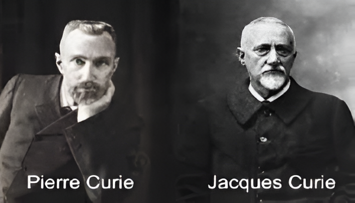

La piezoelectricidad es un fenómeno físico que se manifiesta en ciertos materiales, permitiendo la generación de un voltaje eléctrico cuando se les aplica una presión mecánica. Este descubrimiento, realizado por los hermanos Curie en 1880, ha abierto un amplio campo de aplicaciones en la tecnología moderna.
